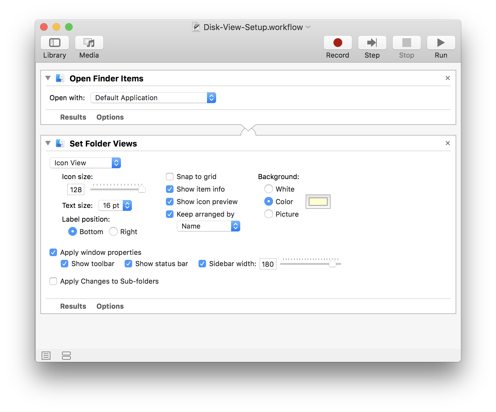
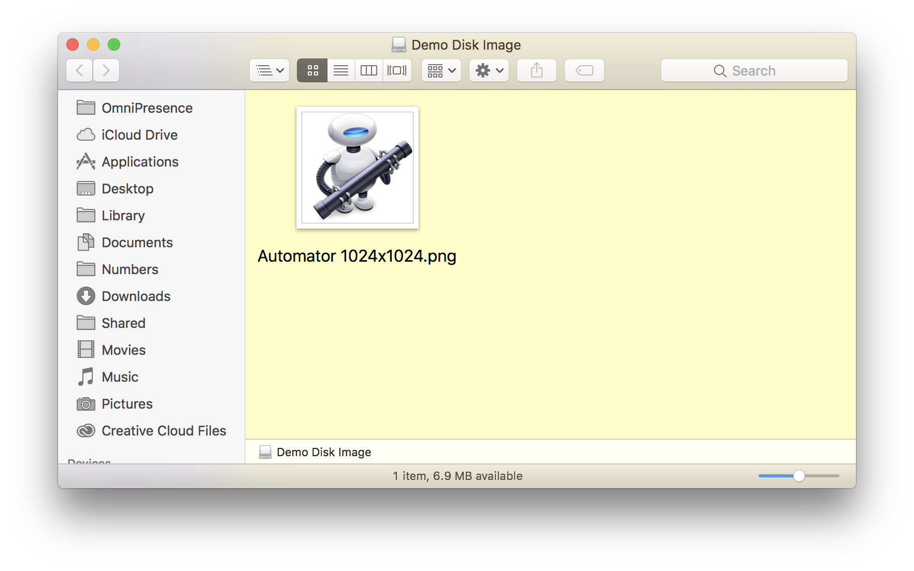

TAP TO HIDE SIDEBAR


Automator Utilities
Here are specialized utilities for performing special actions with Automator workflow.
Run Workflow on Volume Mount
This script applet will prompt to execute a chosen Automator workflow when a new volume is mounted. By default, the full POSIX path to the newly mounted volume is passed as input to the workflow.
The script uses AppleScriptObj-C to access the NSUserDefaults and NSFileManager classes of the Foundation frameworks, and both the NSWorkspace and NSNotificationCenter classes of the AppKit framework to respond when a disk is connected to the computer.
To setup the applet for use:
- Save the script as an application with the “Stay Open” option selected, and the “Show Startup Screen” option deselected.
- IMPORTANT: In the script information pane, assign the applet a unique bundle identifier, (without spaces) such as: com.YourName.AppletName
- Re-Save the applet.
- Place the workflow to be executed in the Workflows folder in the Library folder in your Home directory.
To use the applet, double-click its icon, and then select the workflow file from the forthcoming file chooser dialog. To stop using the applet, bring it to the front, and select “Quit” from the applet’s “File” menu or type Command-Q (⌘Q).
| Run Workflow on Mount | ||
| 01 | use framework "Foundation" | |
| 02 | use framework "AppKit" | |
| 03 | use scripting additions | |
| 04 | ||
| 05 | property ignoredVolumes : {"home", "net", "Recovery HD"} | |
| 06 | ||
| 07 | global pathToWorkflow | |
| 08 | ||
| 09 | on run | |
| 10 | -- SET VALUE OF PROPERTY TO STORED WORKFLOW PATH | |
| 11 | my initializeDefaults() | |
| 12 | ||
| 13 | -- CHECK STATUS OF STORED WORKFLOW PATH | |
| 14 | if (pathToWorkflow as text) is "" then | |
| 15 | my promptForWorkflow() | |
| 16 | else | |
| 17 | -- DISPLAY OPENING DIALOG | |
| 18 | display dialog "Workflow file: " & return & return & (pathToWorkflow as text) buttons {"Quit", "Change", "Start"} default button 3 with title (name of me) | |
| 19 | set buttonPressed to the button returned of the result | |
| 20 | if the buttonPressed is "Change" then | |
| 21 | -- prompt for a new workflow | |
| 22 | my promptForWorkflow() | |
| 23 | else if buttonPressed is "Quit" then | |
| 24 | tell me to quit | |
| 25 | else -- check to see if workflow file exists | |
| 26 | if my workflowCheck() is false then | |
| 27 | display alert "MISSING RESOURCE" message "There is no workflow file at the indicated path:" & ¬ | |
| 28 | return & return & pathToWorkflow buttons {"Select", "Quit"} default button 2 | |
| 29 | if button returned of the result is "Quit" then | |
| 30 | tell me to quit | |
| 31 | end if | |
| 32 | -- prompt for a new workflow | |
| 33 | my promptForWorkflow() | |
| 34 | end if | |
| 35 | end if | |
| 36 | end if | |
| 37 | ||
| 38 | -- REGISTER FOR NOTIFICATION | |
| 39 | my registerToReceiveNotification() | |
| 40 | ||
| 41 | end run | |
| 42 | ||
| 43 | on initializeDefaults() | |
| 44 | -- Initialize default if needed, retrieve current value | |
| 45 | tell current application's NSUserDefaults to set defaults to standardUserDefaults() | |
| 46 | tell defaults to registerDefaults:{pathToWorkflow:""} | |
| 47 | -- set the value of the applet property to the stored value | |
| 48 | tell defaults to set pathToWorkflow to (objectForKey_("pathToWorkflow")) as text | |
| 49 | end initializeDefaults | |
| 50 | ||
| 51 | on workflowCheck() | |
| 52 | -- check validity of stored path | |
| 53 | -- create an instance of the Shared Workspace | |
| 54 | set workspace to current application's NSWorkspace's sharedWorkspace() | |
| 55 | -- check for existence | |
| 56 | set fileExistenceStatus to (workspace's isFilePackageAtPath:pathToWorkflow) | |
| 57 | -- return result | |
| 58 | return fileExistenceStatus | |
| 59 | end workflowCheck | |
| 60 | ||
| 61 | on promptForWorkflow() | |
| 62 | -- prompt user to choose a workflow file | |
| 63 | try | |
| 64 | activate | |
| 65 | set workflowsFolderPath to checkForWorkflowsFolder() | |
| 66 | if workflowsFolderPath is false then | |
| 67 | set defaultLocation to (path to desktop folder) | |
| 68 | else | |
| 69 | set defaultLocation to workflowsFolderPath as POSIX file as alias | |
| 70 | end if | |
| 71 | set thisPOSIXPath to POSIX path of ¬ | |
| 72 | (choose file of type "com.apple.automator-workflow" with prompt ¬ | |
| 73 | "Select the workflow to be run when a volume is mounted:" default location defaultLocation) | |
| 74 | tell current application's NSUserDefaults to set defaults to standardUserDefaults() | |
| 75 | tell defaults to setObject:thisPOSIXPath forKey:"pathToWorkflow" | |
| 76 | return thisPOSIXPath | |
| 77 | on error | |
| 78 | tell me to quit | |
| 79 | end try | |
| 80 | end promptForWorkflow | |
| 81 | ||
| 82 | on checkForWorkflowsFolder() | |
| 83 | set aFileManager to current application's NSFileManager's defaultManager() | |
| 84 | set aURL to aFileManager's URLsForDirectory:(current application's NSLibraryDirectory) inDomains:(current application's NSUserDomainMask) | |
| 85 | set workflowsFolderPath to (((item 1 of aURL)'s |path|()) as string) & "/Workflows" | |
| 86 | if (aFileManager's fileExistsAtPath:workflowsFolderPath isDirectory:true) then | |
| 87 | return workflowsFolderPath | |
| 88 | else | |
| 89 | return false | |
| 90 | end if | |
| 91 | end checkForWorkflowsFolder | |
| 92 | ||
| 93 | on registerToReceiveNotification() | |
| 94 | -- create an instance of the Shared Workspace | |
| 95 | set workspace to current application's NSWorkspace's sharedWorkspace() | |
| 96 | -- identify the Shared Workspace's notification center | |
| 97 | set noteCenter to workspace's notificationCenter() | |
| 98 | -- register notification handlers for dealing with volume mounting | |
| 99 | noteCenter's addObserver:me selector:"volumeWasMounted:" |name|:"NSWorkspaceDidMountNotification" object:(missing value) | |
| 100 | end registerToReceiveNotification | |
| 101 | ||
| 102 | on volumeWasMounted:notif | |
| 103 | -- CHECK FOR WORKFLOW FILE | |
| 104 | if my workflowCheck() is false then | |
| 105 | my promptForWorkflow() | |
| 106 | end if | |
| 107 | ||
| 108 | -- get the path to the mounted volume | |
| 109 | set mountedVolumePath to (notif's userInfo()'s NSWorkspaceVolumeURLKey's |path|()) | |
| 110 | -- get last path item | |
| 111 | set thisVolumeName to (mountedVolumePath's lastPathComponent()) as text | |
| 112 | ||
| 113 | if thisVolumeName is not in ignoredVolumes then | |
| 114 | -- display alert | |
| 115 | tell application (POSIX path of (path to frontmost application)) | |
| 116 | display dialog "The volume “" & thisVolumeName & "” has been mounted on this system." & ¬ | |
| 117 | return & return & "Do you want to run the associated workflow?" buttons {"No", "Yes"} default button 2 | |
| 118 | if the button returned of the result is "No" then error number -128 | |
| 119 | end tell | |
| 120 | ||
| 121 | -- RUN WORKFLOW | |
| 122 | try | |
| 123 | -- execute the chosen workflow, passing path to volume as workflow input | |
| 124 | do shell script "automator -i " & (quoted form of (mountedVolumePath as text)) & ¬ | |
| 125 | space & (quoted form of (pathToWorkflow as text)) | |
| 126 | on error errorMessage | |
| 127 | activate | |
| 128 | display alert "WORKFLOW EXECUTION ERROR" message errorMessage | |
| 129 | tell me to quit | |
| 130 | end try | |
| 131 | end if | |
| 132 | end volumeWasMounted: | |
The Automator Workflow
DOWNLOAD the example disk image and Automator workflow
Here is a simple example workflow that opens the mounted volume and customizes the display of the disk’s Finder window.
NOTE: The POSIX path passed as input to the workflow is automatically converted by Automator into a file reference type supported by the first action.

The resulting Finder window:

This webpage is in the process of being developed. Any content may change and may not be accurate or complete at this time.
DISCLAIMER